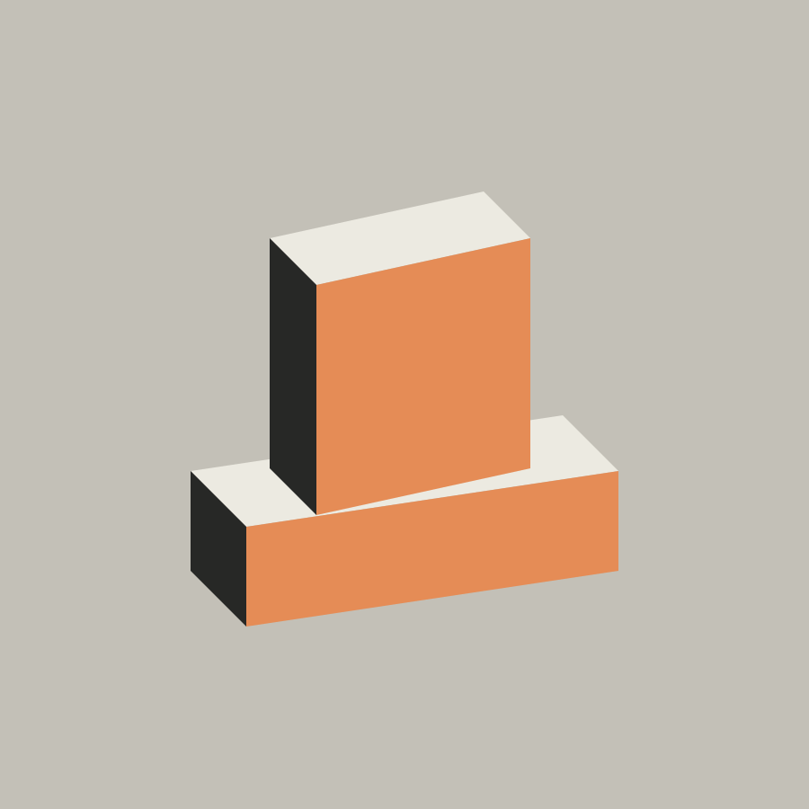
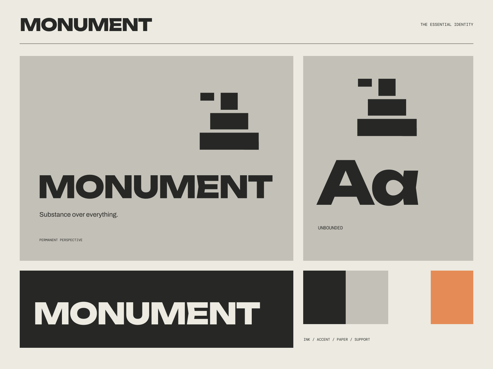

01
A structural point of view
A practice that begins with what a place needs to become.
ARCHITECTURE / MATERIAL / URBAN LIFE
Substance over everything. Matter. Material. Meaning.

A coherent little world
Matter. Material. Meaning. Substance over everything.
01
A practice that begins with what a place needs to become.
02
Form and construction that remain visible and honest.
03
Measured decisions with room for a building to age well.

The point of view
Weighty isometric concrete sculptures, exposed construction grids, and aggressively clear expanded type. Proportion gives the identity its presence.